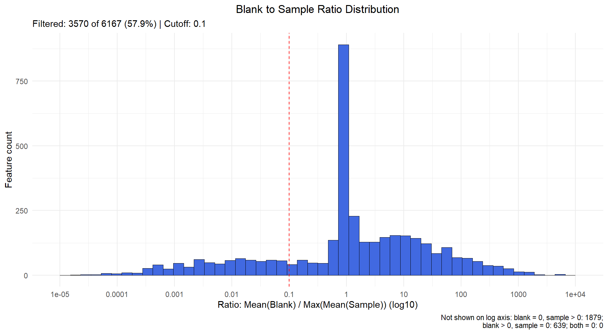
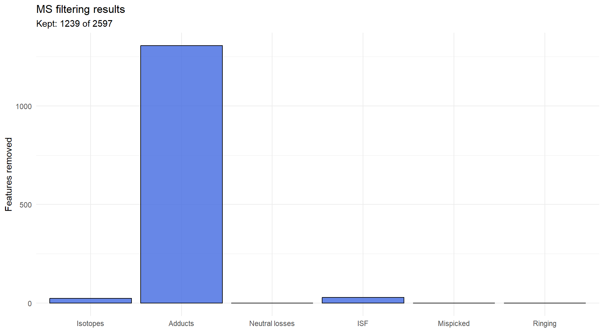
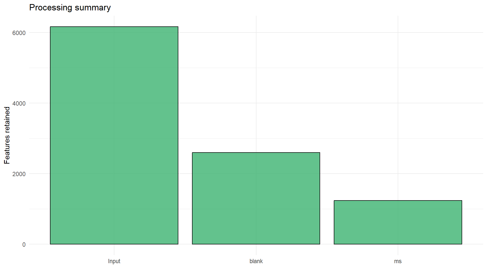

This example imports the bundled Orbi peak table, assigns groups from metadata, removes blank-associated features, and filters isotopes, adducts and in-source fragments. MGF spectra support the fragment checks. See details about dataset here.
The CSV files are installed with the package. There are six blank and three sample columns.
library(MetaboCensoR)
peak_file <- system.file(
"extdata", "orbi_iimn_gnps_quant.csv",
package = "MetaboCensoR", mustWork = TRUE
)
imported <- mc_prepare(
peak_file, type = "mzmine",
sample_keywords = c(".mzML", "Peak area")
)
metadata_file <- system.file(
"extdata", "metadata.csv",
package = "MetaboCensoR", mustWork = TRUE
)
imported$labels <- mc_labels_from_metadata(
metadata_file, sample_names = imported$sample_cols,
sample_col = "Sample name", label_col = "Label"
)Keep features with mean blank intensity below 10% of the largest biological-group mean. Zero/zero features fail; zero blank with positive sample intensity passes.
after_blank <- mc_filter_blank(
imported, groups = "Blank", mode = "mean_cutoff", cutoff = 0.10
)
mc_plot_blank(after_blank, interactive = FALSE)
Only the spectra and custom adduct definitions are downloaded. Retention-time tolerances are in minutes; the selected mass tolerances are in Da. The MS2 intensity threshold is 1% of the spectrum base peak.
base_url <- paste0(
"https://raw.githubusercontent.com/plyush1993/",
"MetaboCensoR_Examples/main/orbi/"
)
mgf_file <- tempfile(fileext = ".mgf")
adduct_file <- tempfile(fileext = ".csv")
download.file(paste0(base_url, "orbi_iimn_gnps.mgf"),
mgf_file, mode = "wb")
download.file(paste0(base_url, "adducts%20%28nontarget%20%2B%202xH2O%29.csv"),
adduct_file, mode = "wb")
spectra <- mc_read_mgf(mgf_file)
ms_options <- mc_ms_parameters(
iso_rt2 = 0.01, iso_cor2 = 0.80,
iso_tol_type2 = "da", iso_mz_tol2 = 0.005,
add_rt2 = 0.005, add_cor2 = 0.80,
add_tol_type2 = "da", add_mz_tol2 = 0.005,
add_pol2 = "positive",
isf_rt2 = 0.01, isf_cor2 = 0.95,
isf_ms2_check2 = TRUE, isf_ms2_mz_tol2 = 0.01,
isf_ms2_rel2 = 1, isf_mgf_id_field = "acquisitionNum"
)
after_ms <- mc_filter_ms(
after_blank, filters = c("isotopes", "adducts", "isf"),
parameters = ms_options, spectra = spectra, adducts = adduct_file
)
mc_plot_ms(after_ms, interactive = FALSE)
mc_summary(after_ms)| step | before | after | removed |
|---|---|---|---|
| blank | 6167 | 2597 | 3570 |
| ms | 2597 | 1239 | 1358 |
The summary plot shows features retained at input, after blank filtering and after MS filtering.
mc_plot_summary(after_ms, interactive = FALSE)
Annotation tables and removed IDs remain accessible independently of the exported peak table.
# Inspect annotation tables interactively
head(after_ms$annot_tbls$add_table)
head(after_ms$annot_tbls$isf_table)The export restores the input table layout and keeps MGF spectra
matching retained feature IDs. Replace tempdir() with your
output directory to keep the files permanently.